Scaling Lean for AI
Leonardo de Moura
Vice President and Distinguished Scientist, AWS
Chief Architect, Lean FRO
SViL · Stanford · November 7, 2026
What is Lean?
A proof assistant and programming language that is transforming how we approach maths, software verification, and AI.
Lean provides machine-checkable proofs.
Lean is implemented in Lean, and is very extensible and scalable.
Small trusted kernel. Proofs can be exported and independently checked.
352K+ unique installations: ~203K VS Code; ~149K Open VSX.
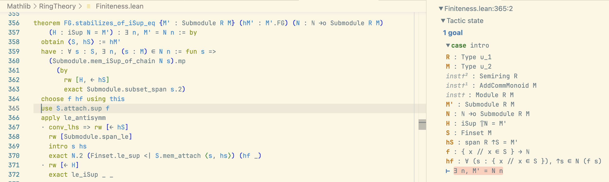
Programming and Theorem Proving in Lean
"You have written my favorite computer game" — Kevin Buzzard, Imperial College
def odd (n : Nat) : Prop := ∃ k, n = 2 * k + 1
theorem square_of_odd_is_odd : odd n → odd (n * n) := by
intro ⟨k₁, e₁⟩
simp [e₁, odd]
exists 2 * k₁ * k₁ + 2 * k₁
lia
Mathlib: The Lean Mathematical Library
Created in July 2017, in Lean 3 during Big Proof. September 2026:
-
280,000+ formalized theorems.
-
2.4M+ lines of Lean. 50,000+ lines of extensions.
-
750+ contributors.
-
1,500+ type classes, 20,000+ instances.

Mathematics Is Adopting Lean
Six Fields Medalists engaged: Tao, Scholze, Viazovska, Gowers, Hairer, Freedman.
-
Carleson's Theorem (completed) — van Doorn
-
Liquid Tensor Experiment (completed) — Commelin
-
The Polynomial Freiman-Ruzsa Conjecture (completed) — Tao
-
Equational Theories Project (completed) — Tao
-
Sphere Packing — Birkbeck, Hariharan, Lee, Ma, Mehta, Viazovska
-
Fermat's Last Theorem — Buzzard
-
Inter-Universal Teichmüller Theory — Mochizuki
Software Verification
-
Cedar (AWS): Verified Authorization
-
SymCrypt (Microsoft): Verified Cryptography
-
Kraken (Google): x64 and aarch64 Assembly
-
ArkLib (Ethereum Foundation): Formally Verified Arguments of Knowledge
-
Signal Shot (Beneficial AI): Verify the Signal protocol and app
-
SampCert (AWS): Differential Privacy
-
CSLib: Computer Science Library
Papers with Lean
Lean on GitHub
AI Is Writing Lean
Fermat's Last Theorem: 13M+ Lines of Lean
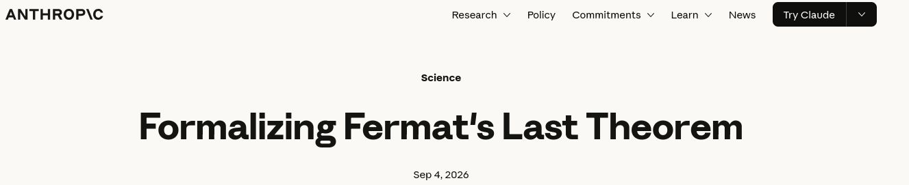
"We are sharing the first complete computer-checked proof of Fermat's Last Theorem. Claude worked largely autonomously over 11 days to write the proof in the Lean programming language."
Navier–Stokes and Euler in Lean


Lines of Lean, September 22: Buckmaster–Alpöge 1.81M; OpenAI 641K.
OpenAI: Subexponential k-SAT in Lean
Deterministic subexponential-time algorithm for k-SAT, every fixed k ≥ 2. Also counts satisfying assignments exactly, in polynomial space. AI output October 16; Lean formalization October 17.
From OpenAI's Comparator challenge file:
abbrev Clause (V : Type u) := Finset (Literal V)
abbrev CNF (V : Type u) := Finset (Clause V)
def WidthAtMost (k : ℕ) (F : CNF V) : Prop := ∀ C ∈ F, C.card ≤ k
def count (F : CNF V) : ℕ := (satisfyingAssignments F).card
The theorem: one fixed machine computes count F for every F with WidthAtMost k F, within the stated time and space bounds.
Under examination by a group led by Russell Impagliazzo, Ramamohan Paturi, and Ryan Williams.
Classification of Finite Simple Groups

34 deviations from the published arguments, resolved during formalization.
The Stacks Project in Lean

-
The ~7,500-page open reference for algebraic geometry, started by Johan de Jong (Columbia) in 2005.
-
Dozens of statements needed refinement: missing hypotheses, edge cases in positive characteristic.
Tau Ceti
At the current rate, Kim expects 100M lines by 2027. Anthropic donated $3M of inference to Tau Ceti (AI for Science program).
All 100 Theorems in Lean
Freek Wiedijk's list of 100 significant theorems: Lean is the first system with proofs of all 100.
The 100th, October 30: Green's theorem, in Tau Ceti.
theorem green_ac_index_one {γ : ℝ → ℂ} {a b : ℝ} {U : Set ℂ}
{P Q : ℂ → ℝ} (hab : a < b)
(hγ : AbsolutelyContinuousOnInterval γ a b) (hclosed : γ a = γ b)
(hU : IsOpen U) (hregion : filledHull (γ '' uIcc a b) ⊆ U)
(hP : ContDiffOn ℝ 1 P U) (hQ : ContDiffOn ℝ 1 Q U)
(hindex : ∀ z ∈ filledHull (γ '' uIcc a b) \ (γ '' uIcc a b),
Contour.windingNumber γ a b z = 1) :
IntervalIntegrable (circulationFun P Q γ) volume a b ∧
IntegrableOn (curl P Q)
(filledHull (γ '' uIcc a b) \ (γ '' uIcc a b)) ∧
(∫ t in a..b, circulationFun P Q γ t) =
∫ z in filledHull (γ '' uIcc a b) \ (γ '' uIcc a b), curl P Q z :=
TauCeti.green_ac_index_one
Scale of Lean Formalizations
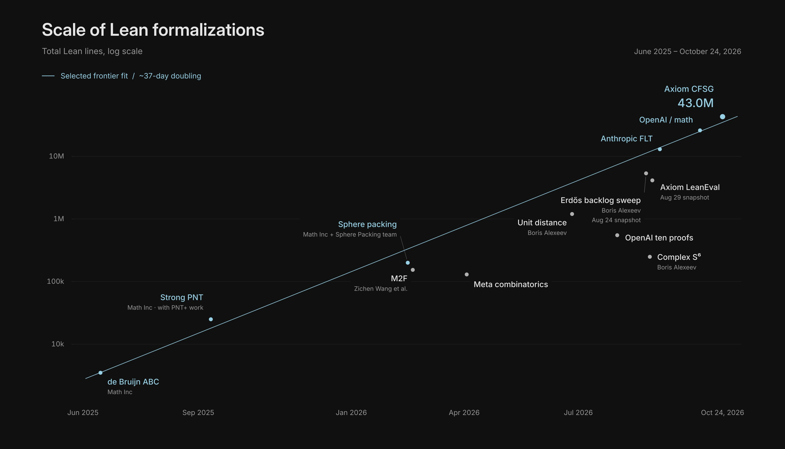
Cedar (AWS): Verified Authorization
Cedar — open-source authorization policy language. Used by AWS Verified Permissions and AWS Verified Access.
Cedar spec: the model is written in Lean.
Three examples of verified components: evaluator, authorizer, validator.
-
forbid_trumps_permit— if any forbid policy is satisfied, the request is denied. -
allowed_only_if_explicitly_permitted— a request is allowed only if at least one permit policy is satisfied. -
typecheck_is_sound— if the validator accepts a policy, evaluation produces a boolean.
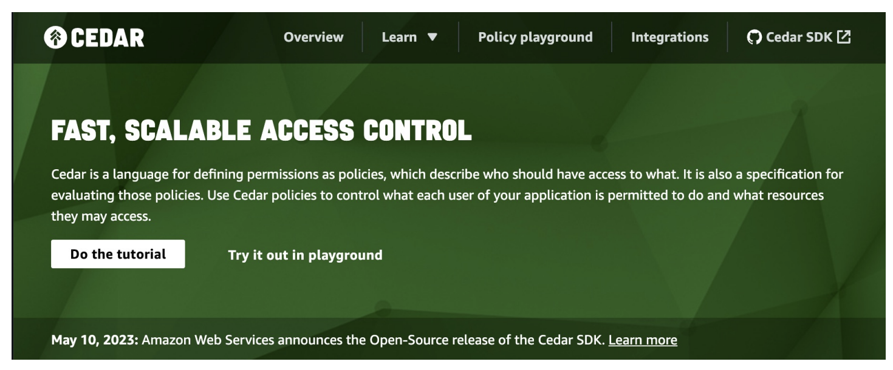
Cedar: The Engineering Story
Executable Lean model alongside Rust production code. Lean model ~10× smaller than Rust.
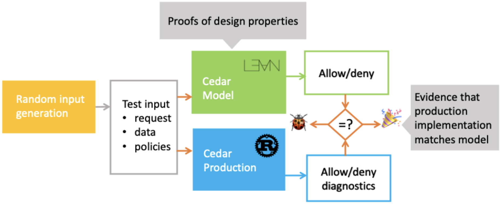
-
~100M differential random tests nightly. Lean: 5 μs/test. Rust: 7 μs/test.
-
Release gate: no Cedar version ships unless model, proofs, and differential tests are current.
"We've found Lean to be a great tool for verified software development." — Emina Torlak, Senior Principal Scientist, AWS
SampCert (AWS): Verified Differential Privacy
An open-source Lean library of formally verified differential privacy primitives.
The implementation is not only verified, but it is also twice as fast as the previous one.
SampCert is software, but its verification relies heavily on Mathlib.
The verification of code addressing practical problems in data privacy depends on the formalization of mathematical concepts, from Fourier analysis to number theory and topology.
Deployed in AWS Clean Rooms Differential Privacy.
PLDI 2025: "Verified Foundations for Differential Privacy."
“For SampCert, I started using Lean because of Mathlib, but I realized that Lean isn't just an excellent proof assistant, it's also a very pleasant and efficient programming language with a great ecosystem.” — Jean-Baptiste Tristan, Senior Principal Scientist, AWS
Kraken (Google): Verified Assembly
Jonathan Protzenko (Google, project lead), Andres Erbsen, Luke Zarko, and the Kraken team
FFmpeg's AAC SBR decoder: memory safety under its API protocol
10,000+ assembly instructions; ~240K lines of Lean.
Verifies x64 and aarch64 assembly, hand-written or compiler-generated. Semantics written by hand; proofs written by agents.
Built with vcgen (Sebastian Graf, Lean FRO).
SymM and grind hom are joint work between Google and the Lean FRO.
SymCrypt (Microsoft): Verified Cryptography
Son Ho (Microsoft Research) and the SymCrypt team
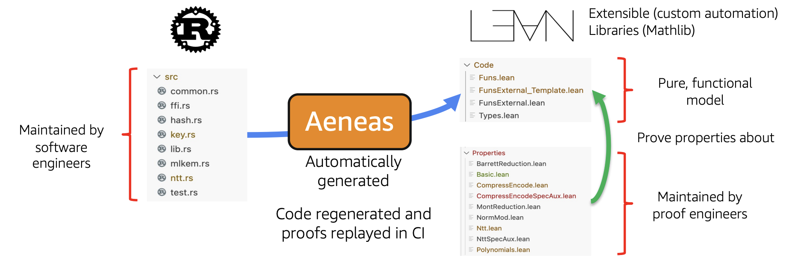
SymCrypt: Microsoft's core cryptographic library, rewritten in Rust.
Aeneas: translates safe Rust to pure functional Lean code.
The first release includes complete proofs for ML-KEM and SHA-3 code running in Windows Insider builds today.
"We are verifying code faster than we can write it." — Son Ho, SymCrypt, Microsoft
Neuron Compiler (AWS)
Sean McLaughlin and the Neuron team
Work on the compiler stack for AWS Trainium, Amazon’s custom AI accelerator.
700,000 lines of Lean and growing. Assembler, disassembler, and several kinds of ISA simulators.
-
The ISA specification changes several times per week.
-
Lean provides an up-to-date simulator that hardware and verification engineers share.
-
Work is expanding to higher-level compilation and lower-level simulation.
Long-term goal: end-to-end compiler verification — source program compiles to Trainium machine code, with a proof that compilation preserves semantics.
Neuron: A Simple Model and a Fast Implementation
Sean McLaughlin and the Neuron team
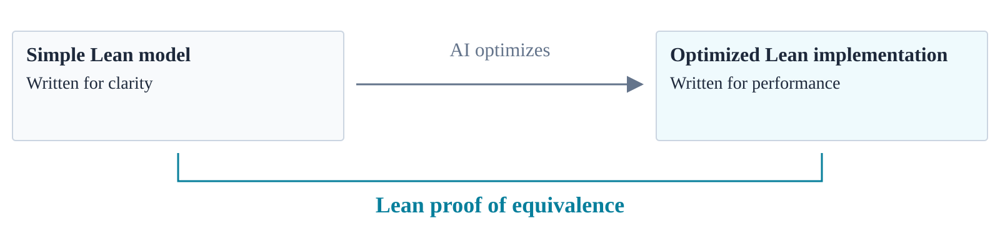
An AI-generated C version had many bugs.
The team instead used AI to write a fast Lean version and prove it equivalent to the simple model.
xv6: From Rocq to Lean
Frans Kaashoek and Nickolai Zeldovich (MIT)
xv6 kernel (6,657 lines of C and assembly): verified in Rocq with AI agents, then ported to Lean by an agent.
lean-zip: zlib in Lean
Kim Morrison (Lean FRO)
Coding agents (Claude and Codex) converted zlib to Lean, proved it correct, then optimized it under the proof.
theorem zlib_decompressSingle_compress (data : ByteArray)
(level : UInt8) (maxOutputSize : Nat)
(hsize : data.size ≤ maxOutputSize) :
ZlibDecode.decompressSingle
(ZlibEncode.compress data level) maxOutputSize = .ok data :=
LeanZip.zlib_decompressSingle_compress
-
Silesia corpus (212 MB), level 6: lean-zip 4.57 s, miniz_oxide (Rust) 5.77 s; 2× at level 9. 1,100+ theorems, ~32K lines of proof.
"This allows us to let AIs loose optimizing the code, requiring that they update the proof whenever the implementation materially changes." — Kim Morrison
lean-zip: Optimized Under the Proof

Hex: Verified Algorithms
Kim Morrison (Lean FRO)
Specifications by people; code and proofs by AI agents.
Integer polynomial factorization | Berlekamp–Zassenhaus with van Hoeij's reconstruction, verified for the first time. Faster than Isabelle's verified implementation; about 5× slower than FLINT (unverified). |
LLL lattice reduction | Faster than Isabelle's verified implementation. Or call fplll and check a certificate in Lean. |
Graph isomorphism | A subset of nauty, proved correct: canonical forms with kernel-checkable certificates. |
Linear programming |
SoPlex as an untrusted oracle; exact rational certificates checked in Lean. 2–3× faster than |
Aristotle for C and Verilog
October 27, 2026
Tensordyne: Verilog
-
12.2M gate equivalents, 312 pages of specifications.
-
241 whole-block properties: 185 proved, 56 refuted.
-
8 bugs found, including earlier sub-block runs, 25,000–110,000 cycles after reset.
LibTomMath: C
-
3 bugs found and repaired.
-
Two arithmetic routines optimized and proved against the same specification.
-
Modular exponentiation: 1.31–1.38× faster (1,024- to 4,096-bit).
More Software Verification in Lean
| Kiro (AWS), November 2. 26 functions: 70 properties proved in Lean models; 18 counterexamples reproduced on the code. |
|
Certora, September 10. zlib's |
| &Truth, launched October 29. Startup for software verification on Lean, founded by Clark Barrett, Ilya Sergey, and Chris Hsu. |
The Lean FRO
The Statement / Specification Is Our Responsibility

Formal Conjectures (Google DeepMind): curated, human-verified formal statements of open problems.

Validation Architecture
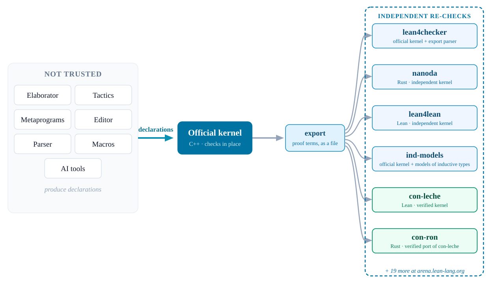
Recent Progress
Mathlib Build Cost
lake check and Comparator Live
Lean v4.35 · October 12
-
lake check: export the development and recheck it outside the build. -
lake comparator: check a solution against a challenge statement. -
--paranoid: accept only if Lean's kernel and all 5 bundled checkers accept: lean4lean, nanoda, con-leche, con-ron, leanchecker-paranoid. -
Comparator Live: public since June 11. Paste a challenge and a solution; it runs the checkers in a sandbox.
Comparator Challenges
Challenge.lean: the statement only, with minimal dependencies, for review.
theorem FLT_for_comparator (n : Nat) (hn : 3 ≤ n)
(a b c : Nat) (ha : 0 < a) (hb : 0 < b) (hc : 0 < c) :
a ^ n + b ^ n ≠ c ^ n := sorry
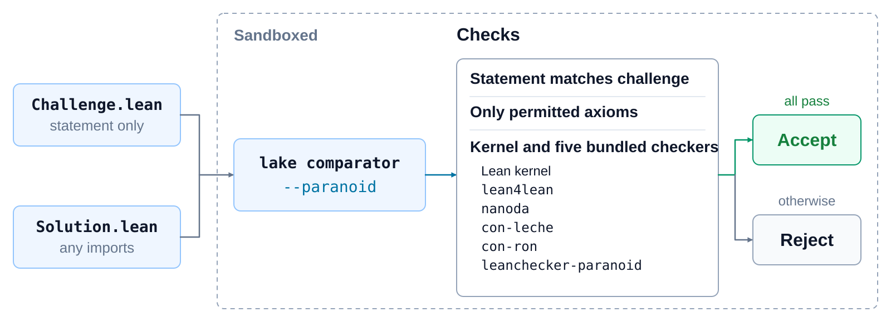
con-leche: A Verified Proof Checker
Joachim Breitner (Lean FRO). Code and proofs written by Claude. Released September 10, 2026.
A proof checker written in Lean. The main theorem: every set of declarations it accepts has a model in set theory. Checks all of Mathlib, FLT, Navier–Stokes, and openai/math. Full Mathlib, one worker:
Mathlib with 8 workers: ~100 s. FLT (1,044,222 declarations).
con-ron and con-agua
con-agua theorem: if checker.s accepts, con-leche and con-ron accept (up to resource limits).
Checking OpenAI's k-SAT Formalization
Five checkers accept all 95,173 declarations. Time to check, one job each:
grind: Homomorphisms
[grind hom] rules translate Fin, BitVec, UInt8–UInt64, and Int8–Int64 into Nat/Int arithmetic, where lia decides the goal. Range facts come from [grind hom_pred]. On by default.
example (x y : UInt8) (h : x < y) : x + 1 ≤ y := by grind
example (x y : BitVec 8) (h : x < y) : x + 1 ≤ y := by grind
example (a b : Int64) (h₁ : 0 ≤ a) (h₂ : a < b) : a + 1 ≤ b := by grind
Prototyped by Andres Erbsen (Google) in Kraken. Replaces the ToInt type classes.
lia: Linear Integer Arithmetic
-
Disjunction hulls: bounds that hold in every disjunct are asserted without case splitting.
-
Dynamic variable ordering: before a Cooper split with many cases (e.g. 2³² for a three-limb counter), move the variable first and restart.
-
Exact equality elimination, as in the Omega test: no derived bounds with coefficients in the thousands.
-
Compact certificates: proofs shared across
grindcase splits; one benchmark's kernel check 32 s → 145 ms.
example (x y : Int) (b : Bool)
(h : (b = true ∧ y = x + 1) ∨ (b = false ∧ y = x + 2)) :
x + 1 ≤ y ∧ y ≤ x + 2 := by
lia
grind ring: Cheap Certificates
Gröbner basis benchmark: 55.8 G → 8.0 G instructions
-
Steps checked by definitional equality: each step states its result and the kernel checks it by
Eq.refl, with hints for where each monomial goes. -
Packed monomials: a monomial is one natural number; multiplying monomials adds numbers.
-
Kronecker certificates: check a polynomial identity by evaluating both sides at one well-chosen big number. The kernel compares two numbers instead of normalizing polynomials. One normalization benchmark: kernel 6.0 G → 0.25 G instructions.
vcgen: Join Points
def f (n : Nat) : Id Nat := do
let mut x := 0
if n > 0 then x := 1 else x := 2
return x + 1
The do elaborator shares the code after the if as a join point:
def f' (n : Nat) : Id Nat :=
have __do_jp := fun (r : Unit) (x : Nat) => pure (x + 1)
if n > 0 then __do_jp () 1 else __do_jp () 2
Unfolding the join point at every jump: k consecutive splits give 2ᵏ copies.
vcgen (verification-condition generator, Sebastian Graf): +jp proves the join point once.
vcgen: Join Points
vcgen: Sequential Conditionals
Reported by Paul Govereau (AWS).
12 conditionals: timeout → 56 ms. 32 conditionals: 128 ms.
Before
Conditionals | goals | vcgen + omega | +jp, then omega |
|---|---|---|---|
4 | 32 | 109 ms | 34 ms |
6 | 128 | 426 ms | 125 ms |
8 | 512 | 1.9 s | 690 ms |
10 | 2,048 | 8.3 s | 4.2 s |
12 | — | — | timeout |
After
Conditionals | vcgen +jp | lia | vcgen +jp with lia |
|---|---|---|---|
4 | 21 ms | 16 ms | 29 ms |
8 | 25 ms | 25 ms | 41 ms |
12 | 32 ms | 35 ms | 56 ms |
16 | 38 ms | 46 ms | 68 ms |
24 | 51 ms | 67 ms | 97 ms |
32 | 65 ms | 93 ms | 128 ms |
vcgen: Measurements
Workload | Before | After |
|---|---|---|
VC generation, 2,200 statements |
|
|
Kernel checking, same proof | 246 s | 0.53 s (464×) |
con-ron proofs (Joachim Breitner) | 5,677 G instructions, 592 s | 1,647 G instructions (3.4×), 228 s |
vcgen (Sebastian Graf) replaces mvcgen; built on SymM.
bv_decide
Henrik Böving: bv_decide ported to SymM, up to 6× faster.
SMT-COMP 2026, QF_BitVec, sequential track, 2,540 benchmarks:
SMT-LIB QF_BV: 45,159 of 46,191 benchmarks with kernel-checked proofs.
Lake
CFSG module graph, ~19.9K modules: 2,270 s → 1,387 s
Lake's own CPU time: −93%.
Mac Malone, after a proposal by Nickolai Zeldovich: the transitive import closure is computed from one build-store snapshot.
Mac Malone and Marcelo Lynch: cache overhaul with on-demand downloads, parallel transfers, deduplication by hash, content-stable archives.
lean-beam
in Lean v4.36 · release planned November 16
Emilio J. Gallego Arias (Lean FRO)
Agent interface to the Lean server: checkpoints without re-elaboration; branching for tree search.
Verso: Type-Checked Documents
-
Future math papers will embed type-checked Lean code.
-
Lecture notes, papers, and slides in one tool.
-
These slides are written in Verso.
-
Every example is checked by Lean.
-
lean-lang.org is written in Verso.
-
My homepage is written in Verso.
-
Verso is a domain-specific language embedded in Lean.
-
Built by David Thrane Christiansen at the Lean FRO.

Verso Blueprint
Emilio J. Gallego Arias (Lean FRO), following Patrick Massot's Lean Blueprints
FLT blueprint, warm edit: 46.0 s → 8.18 s (with Wojciech Nawrocki)
-
Informal text, Lean declarations, and the dependency graph in one Lean document.
-
A node is complete when it and its dependencies are formalized.
-
Shown: the Noperthedron blueprint.
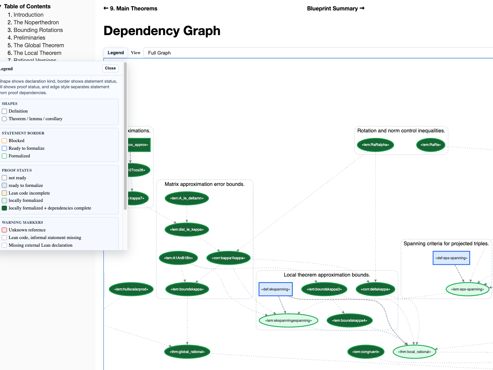
Palomar and AI Review
Palomar: Kim Morrison, with Terence Tao, Ravi Vakil, Akshay Venkatesh, Jeremy Avigad, and others
Palomar: 999 registered results
Palomar: each entry has the exact statement, the libraries it depends on, review comments.
Stacks in Lean (Axiom): each Lean declaration carries its Stacks tag.
Tau Ceti (Kim Morrison): AI reviewers check pull requests against public rubrics; AI changes to human-owned files need human review.
Code Formatter
Marc Huisinga (Lean FRO)
-
Extensible: formatting rules for all syntax in Lean core (
Init,Std,Lean); new syntax can provide its own formatter. -
Integrated with the language server.
-
Evaluated on all of core and Mathlib; reviewed with Lean FRO, Mathlib, CSLib, and PhysLib maintainers.
-
Infix operators start the line, so the structure of a term is visible at its left edge.
Also in the editor: fold away the proofs of theorems, on request or automatically.
Nerodia: Lean Libraries for Python
Mac Malone (Lean FRO)
-
A bridge between Lean and Python, inspired by Rust's PyO3.
-
Write Python extensions in Lean.
-
Example: ship the verified lean-zip as a Python library.
Nerodia: Wrapping lean-zip
LeanZip.lean defines the Python module in Lean. Docstrings become Python docstrings; Python type stubs are generated from the Lean types.
/-- Lean-verified zlib implementation. -/
py_module "leanzip"
/-- Verified compression. -/
@[py_module_fn]
def compress (data : ByteArray) : ByteArray :=
ZlibEncode.compress data 6
/-- Verified decompression. -/
@[py_module_fn]
def decompress (data : ByteArray) : PyIO PyBytes := do
match ZlibDecode.decompressSingle data with
| .ok buf => mkPyBytes buf
| .error e => raisePyRuntimeError e
Build: nerodia in lakefile.toml; setuptools-lean in pyproject.toml.
Nerodia: Running from Python
>>> import leanzip
>>> print(leanzip.__doc__)
Lean-verified zlib implementation.
>>> test = b"Nerodia: snakes that reside in lakes"
>>> import zlib # Python's standard implementation
>>> print(zlib.decompress(leanzip.compress(test)))
b'Nerodia: snakes that reside in lakes'
>>> print(leanzip.decompress(zlib.compress(test)))
b'Nerodia: snakes that reside in lakes'
Verified Lean compression, interoperating with Python's zlib. No extra setup beyond pyproject.toml.
Next
con-leche as the Official Kernel
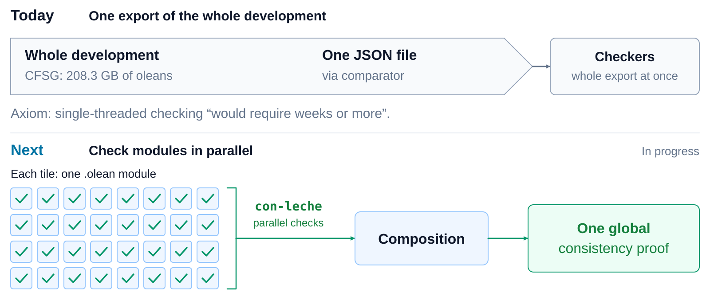
Kernel Improvements
lean-raw: Two paths to the kernel
Agents "have to use syntax that we designed for human interaction – extensible, flexible, but also slow."
Fully explicit terms parsed directly into Expr, with no elaboration.
lean-raw: Initial benchmarks
Tau Ceti addition law: 74 s of elaboration → 20 ms
Statements and definitions only. G instructions:
File | Surface syntax | lean-raw |
|---|---|---|
Tau Ceti addition law | 620.51 | 1.26 |
CFSG worst file | 1,996.1 | 638.7 |
CFSG worst file, no code generation | 1,440.9 | 84.6 |
Lazy Import
in progress · Sebastian Ullrich
Builds and Elaboration at Scale
-
Mac Malone, Lake: module setup that scales with the size of the import closure; scanning for updated files.
-
Planned:
lake buildwithout kernel checks, thenlake checkwith any checker. -
Sebastian Ullrich: finer-grained caching in elaboration, including type class resolution.
-
Sebastian Graf: the new
donotation, with support for intrinsic verification.
Veil 2.0
Ilya Sergey, Qiyuan Zhao, George Pîrlea, Arbenit Kamberi, Ziyu Mao, Vasilii Nesterov, Yueyang Feng (VERSE lab, NUS)
A Lean library for verifying distributed protocols: model checking, interactive proofs, and automated proofs in one framework. Released November 6.
-
Lace: verified explicit-state model checker for safety. 1.4–21.6× faster than TLA+/TLC across 20 benchmarks.
-
Lasso: verified model checker for LTL liveness; also faster than TLC.
-
Interactive proof mode for LTL specifications.
-
An LLM skill translates TLA+ specifications to Veil; ~40 models ported, including Paxos, EPaxos, NOPaxos, Raft.
Veil 2.0: Lace vs TLC
EPR for Veil
Most of Veil goals are in EPR (effectively propositional logic). Henrik Böving
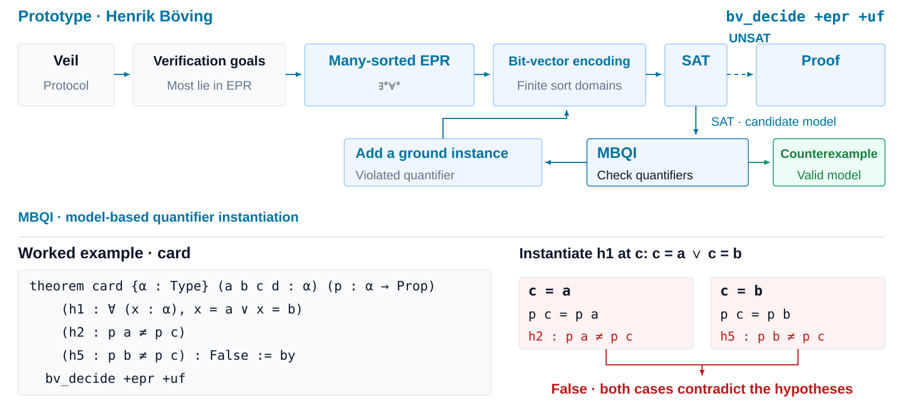
A New Code Generator
Conclusion
Lean is trusted, scalable, and extensible.
Lean is transforming mathematics and software verification. Software verification is now a major use case.
Lean has verified checkers: con-leche, con-ron, con-agua. Next: con-leche as the official kernel.
Focus: Trust, Scalability, Understanding. Scalability is the new challenge.
Lean FRO is looking for a Technical Communication & Content Lead.
Thank You
Leo de Moura
lean-lang.org | leanprover.zulipchat.com